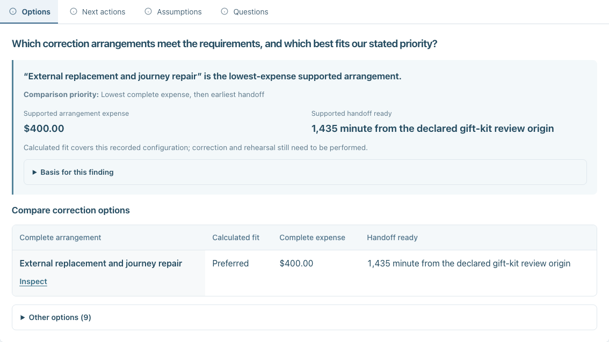
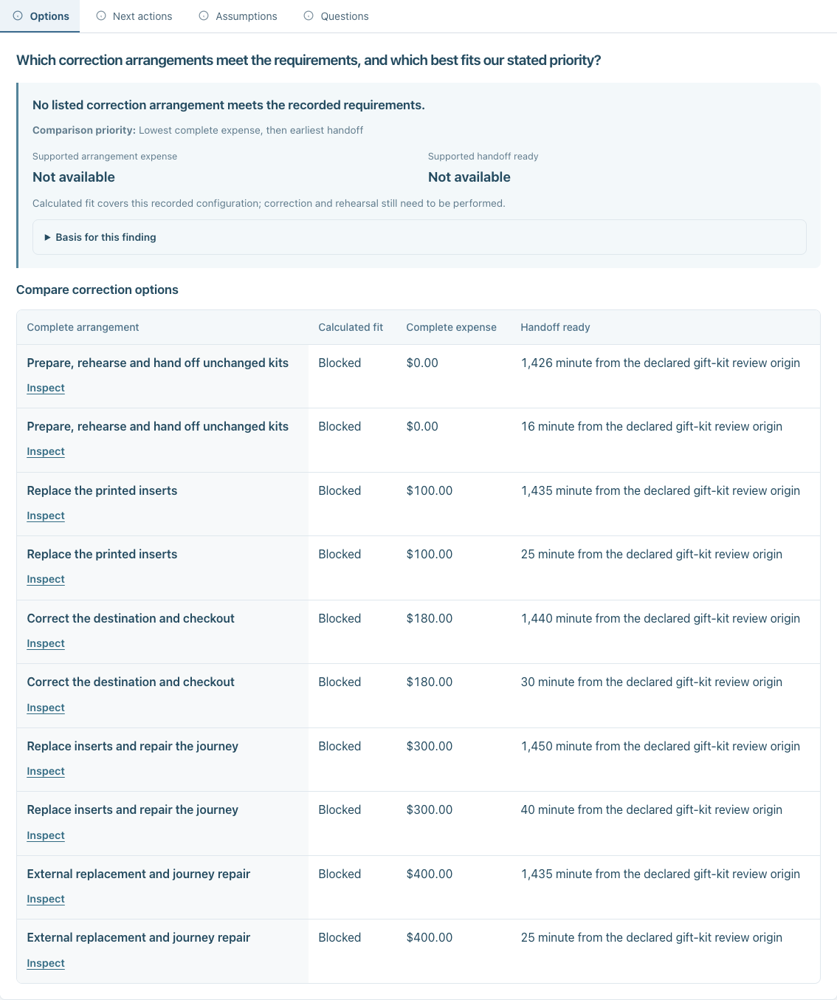

Leah has a deadline-based reason to pay the extra $100. Only thirty minutes remain. The $400 external correction can finish in twenty-five; the $300 in-house sequence needs forty.
Then production forwards the supplier's booking confirmation. It looks familiar because it is: it names the previous insert revision. Finance sees an affordable quote, marketing sees a fast response, and Leah still has to decide whether the team can put this package forward for the current campaign.
A quote and a booking answer different questions.
The quote states the package's price and planned work. The booking supplies a recorded confirmation for the applicable campaign configuration and interval. This workflow requires that confirmation for external work. A price and duration do not establish that the supplier has confirmed the capacity for these kits.
The current campaign uses insert-3. The comparison changes only the insert revision named by the booking: current insert-3 versus earlier insert-2. The campaign itself, its faults, deadline, review time, prices, resources and permissions remain fixed.
Keep the quote; inspect the changed support.
Shared basis. The same urgent GIFT-120 case, review at minute 1,410, deadline 1,440, $600 boundary, quotes, observations, permissions and availability under the same Marketplace 2.8.0 definition.
What changes. Only the external booking’s insert revision changes: insert-3 versus insert-2. The campaign itself remains on insert-3.
Booking covers the current insert
$400 external correction is supported.
- Campaign insert
- insert-3
- Booking names
- insert-3
- Complete handoff
- Minute 1,435: five minutes before cutoff


The recorded booking supports this proposal. Responsible owners still authorize, perform and verify the work.
Booking covers the previous insert
No supplied complete correction passes.
- Campaign insert
- insert-3
- Booking names
- insert-2
- Internal alternative
- Finishes at 1,450: ten minutes late


Leah has a specific unsupported condition to resolve, rather than treating the fast quote as proof that the package can run.
What this means for the decision. Correct scope matters as much as quoted speed. Obtain a real current booking or another supported response; rewriting an old record would manufacture evidence.
With the current booking, the external package passes the recorded requirements and finishes at minute 1,435. Leah can put it forward while the responsible people choose, authorize and coordinate the work.
With the old-insert booking, that package fails the scope requirement. Internal work still finishes at 1,450, after the original minute-1,440 cutoff. The cheaper partial corrections still leave an established fault unresolved. The completed calculation therefore finds no supported complete correction among the supplied packages.
This does not establish that recovery is impossible in the real world. It establishes that none of the declared alternatives satisfies this model's requirements on these records. Another quote, resource or schedule would need its own complete assessment.
Preserve what the source actually says.
Changing the old booking's revision to insert-3 would manufacture evidence of support. Leah needs a genuine source confirmation covering the current work. The original record should continue to name the work it actually confirmed, even when that makes the current proposal inconvenient.
This is a practical consequence of ontology engineering: the model distinguishes a campaign, an insert revision, a quote and a scoped confirmation because the decision depends on those relationships. Collapsing them into one “supplier ready” checkbox would erase the distinction that changes Leah's available response.
The finding is also conditional on source quality. Recording a confirmation does not authenticate a supplier message. People remain responsible for checking that its source, scope and validity are reliable enough for the commitment.
A useful answer can be a condition to resolve.
Leah can now ask the supplier for a specific missing confirmation, seek another complete response or escalate the original promise. She can tell finance why the $400 quote is relevant while making clear why that quote alone is insufficient.
If a genuine current booking arrives, the team records its actual scope and recalculates. The new finding then rests on the new support; the old record remains part of the history. The deadline does not move merely because the supplier has replied.
Even a supported package leaves a final business question: what would justify saying the original handoff is complete?